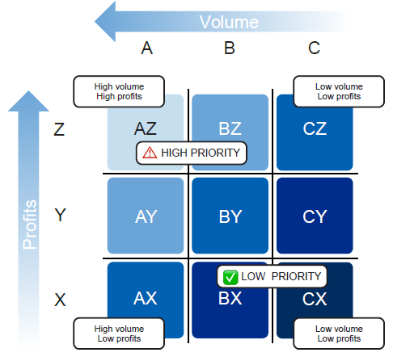
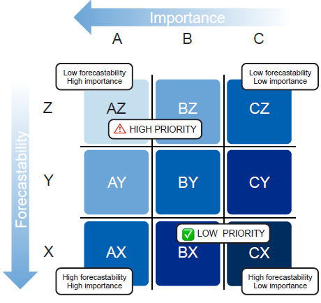
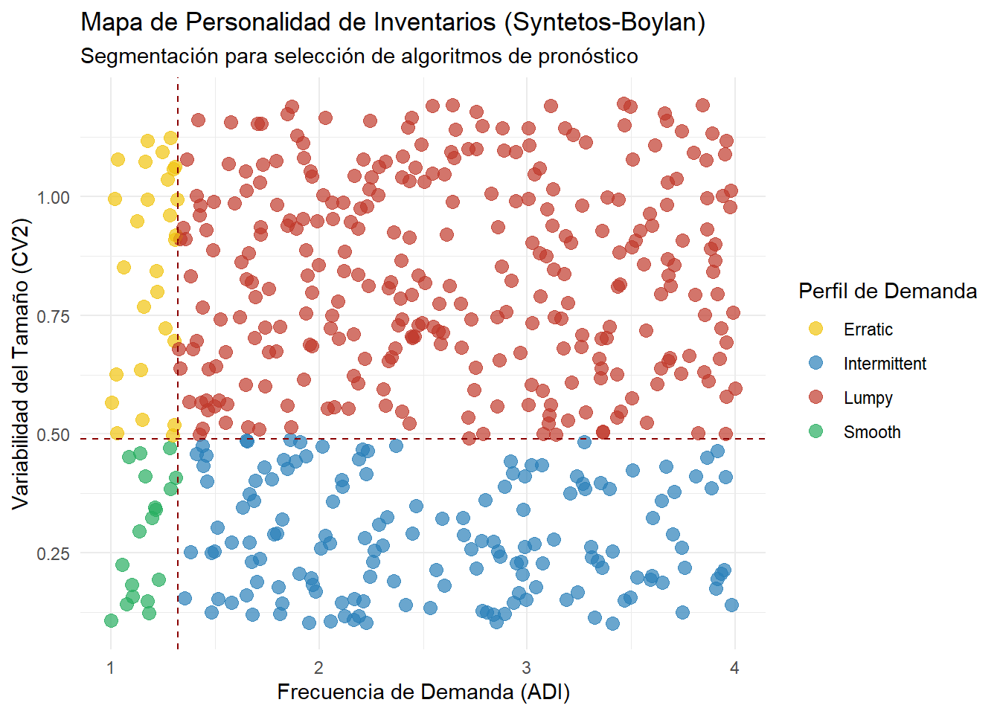

3. Clasificando el Caos: Segmentación ABC/XYZ Dinámica
Tras la limpieza y reconstrucción de la demanda realizada en el Capítulo 2, hemos logrado separar la señal del ruido. Sin embargo, poseer datos limpios es solo la mitad de la batalla. El desafío estratégico fundamental que abordaremos ahora es la asignación eficiente de recursos: ¿En qué productos debemos invertir nuestro capital de trabajo, nuestro espacio de almacenamiento y, sobre todo, nuestro tiempo de gestión?
En el complejo ecosistema de una cadena de suministro, es un error crítico tratar todos los SKUs bajo una política única. Mientras que algunos artículos representan el núcleo de la rentabilidad y la continuidad operativa, otros son “ruido” que consume recursos administrativos sin aportar valor proporcional. Gestionar un tornillo de bajo costo con el mismo rigor que un motor crítico no es solo ineficiente; es una receta para el agotamiento del planificador y la erosión del margen. Este capítulo presenta un sistema de triaje dinámico diseñado para maximizar el retorno sobre el esfuerzo invertido.
TipEl Pareto Estratégico: Maximizando el ROII
Como arquitectos del suministro, nuestra misión es optimizar el ROII (Return on Inventory Investment)1. A diferencia del ROI2 general, el ROII mide cuánta utilidad genera cada unidad de moneda invertida específicamente en stock. Nuestra meta es que el capital “atrapado” en el almacén sea lo más productivo posible.
3.1 Fase 1: Entender el Valor (ABC Multi-criterio)
El Concepto: El ABC clásico se basa en la Ley de Pareto (80/20), que sugiere que una pequeña minoría de SKUs genera la gran mayoría del valor.
3.1.1 Veamos más allá del ABC Tradicional
La mayoría de las empresas implementan un ABC basado únicamente en la Facturación Histórica (Precio de Venta x Unidades Vendidas). Si bien esto identifica qué productos traen más dinero, presenta tres fallas críticas para un ingeniero de Supply Chain:
Ignora el Margen: Puedes vender mucho de algo que te deja poca ganancia.
Ignora el Costo de Oportunidad: No distingue entre un motor de $50,000 y 5,000 tornillos de $10, aunque ambos sumen lo mismo en facturación.
Ceguera Operativa: Un repuesto de $5 que detiene una planta es “Clase C” para el contador, pero es “Clase A” para la operación.
La Propuesta Profesional: El Enfoque Multidimensional
Para una gestión de clase mundial, propongo sustituir la facturación simple por un sistema de tres dimensiones que capture la realidad financiera y operativa:
3.1.2 Valor de Utilización Anual (VUA)
En lugar de ventas, miramos el consumo interno o la demanda proyectada:
Entonces, hagamos esto: No clasifiques solo por venta o costo. Implementa un sistema de puntaje que cruce estas tres variables fundamentales:
Valor de Utilización Anual (VUA):\((\text{Costo Unitario} \times \text{Demanda Reconstruida})\).
¿De dónde sale? El Costo Unitario viene de tu tabla maestro de materiales (maestro de artículos). La Demanda Reconstruida es la sumatoria anual de la serie de tiempo que saneamos en el Capítulo 2.
¿Por qué es superior?: Al usar la Demanda Reconstruida del Capítulo 2, eliminamos el sesgo de las ventas perdidas por falta de stock. El VUA nos dice dónde está realmente el riesgo financiero del capital de trabajo.
3.1.3 Criticidad Técnica (Modelo V.E.D.)
Aquí es donde inyectamos “sentido común de ingeniería” al modelo matemático:
Vital (V): Su ausencia provoca un paro total de línea o la pérdida de un cliente estratégico. (Ej: Un sensor de $20 que es pieza única).
Essential (E): Su ausencia afecta el rendimiento o la calidad, pero permite seguir operando con costos extra.
Desirable (D): Su ausencia es una molestia administrativa que no afecta la promesa de entrega.
3.1.4 Intensidad Logística (Picking/Frecuencia)
Mide el “enfisema operativo”. Un artículo con 1,000 movimientos al año de bajo valor consume más horas-hombre y genera más errores que un artículo de alto valor que se mueve una vez al mes.
Comparativa: Tradicional vs. Profesional
Característica
Enfoque Tradicional (Miopía)
Enfoque Profesional (Estratégico)
Criterio Base
Facturación (Venta x Cantidad)
VUA (Costo x Demanda Real)
Foco
“Lo que más vendemos”
“Donde más dinero tenemos atrapado”
Gestión de Riesgo
Ignora artículos baratos
Usa VED para proteger artículos críticos
Eficiencia Operativa
Trata igual lo que rota mucho y poco
Mide la intensidad de picking
Métrica de Éxito
Disponibilidad general
Maximización del ROII
3.1.5 La Matriz de Decisión Estratégica (ABC + VED)
Al cruzar estas dimensiones, obtenemos una hoja de ruta para el planificador:
Categoría
Perfil ABC
Perfil VED
Acción de Ingeniería
Estratégico
A o B
Vital
Revisión Continua. Cero tolerancia al quiebre.
Financiero
A
Deseable
Optimización de Lote. Reducir stock para liberar capital.
Seguro Operativo
C
Vital
Stock de Seguridad Alto. El costo de tenerlo es bajo, el de no tenerlo es fatal.
Comodities
C
Deseable
Automatización. Kanban o Punto de Reorden simple.
El Resultado: Hemos pasado de una lista de Excel estática a un sistema de triaje dinámico. Ahora el esfuerzo de tu equipo no se desperdicia en artículos irrelevantes y el capital de la empresa está protegido donde más duele.
3.2 Fase 2: Medir la Incertidumbre (Matemática XYZ)
El Concepto: Si el ABC nos dice quién es importante, la segmentación XYZ nos dice qué tan difícil será gestionarlo. Aquí medimos la volatilidad de la señal de demanda. Un producto AX es el escenario ideal (alto valor, alta predictibilidad), mientras que un producto AZ representa el máximo riesgo (alto valor, alta incertidumbre).
Propuesta de Implementación: Calculamos el Coeficiente de Variación (\(CV\)) sobre la serie de tiempo de nuestra Demanda Reconstruida. Esto es vital: no calculamos sobre ventas, sino sobre la intención real de mercado.
\[
\large CV = \frac{\sigma}{\mu}
\]
Desglose de la fórmula y origen de datos:
\(\large\mu\)(Media): Es el promedio de la demanda en el horizonte de tiempo analizado.
\(\large\sigma\)(Desviación Estándar): Mide cuánto se alejan los datos diarios (o semanales) de ese promedio.
Interpretación para ingeniería:
X (Estables):\(CV < 0.5\). La demanda es predecible. Podemos automatizar pedidos y reducir el stock de seguridad al mínimo. Aquí es donde optimizamos el ROII.
Y (Variables):\(0.5 \le CV \le 1.0\). Existen fluctuaciones (estacionalidad o promociones). Requiere modelos estadísticos más avanzados.
Z (Inciertos):\(CV > 1.0\). La desviación supera al promedio. La predicción es poco fiable.

ImportantLa Conexión con el Capital
Recuerda: El Stock de Seguridad (\(SS\)) es directamente proporcional a la desviación estándar (\(\large\sigma\)). Un producto Clase Z requiere, por definición, un colchón de stock mucho más grande. Si un producto es AZ, estás ante un “quemador de capital”. Estos son los SKUs que debemos vigilar con lupa o considerar estrategias de Inventory Pooling (consolidación de stock).
3.3 Fase 3: Decodificando la “Personalidad” del Dato (Syntetos-Boylan)
Mientras que el ABC nos indica la importancia económica y el XYZ la magnitud del ruido, la metodología de Syntetos-Boylan nos permite entender la estructura temporal de la demanda. Esta fase es crítica porque determina qué “motor matemático” (algoritmo) debemos usar para cada producto.
Para clasificar la demanda, utilizamos dos métricas fundamentales que describen cómo se comporta un SKU a lo largo del tiempo.
3.3.1 ADI (Average Demand Interval)
El Intervalo Promedio de Demanda mide la intermitencia o la “rareza” de los pedidos. Nos indica cuántos periodos pasan, en promedio, entre un evento de demanda y el siguiente.
Fórmula:
\[
\large ADI =p = \frac{\text{Número de Periodos Totales}}{\text{Número de Periodos con Demanda}}
\]
Intuición: Si un producto se pide todos los meses en un año, su ADI = 12/12 = 1 (Demanda Continua). Si se pide solo en 4 meses del año, su ADI = 12/4 = 3 (Demanda Intermitente).
Umbral Crítico: El estándar de la industria sitúa el límite en 1.32. Por encima de este valor, la demanda se considera formalmente “intermitente”.
3.3.2 \(CV^2\) (Squared Coefficient of Variation)
El Coeficiente de Variación al Cuadrado mide la estabilidad en el tamaño de los pedidos cuando estos ocurren. Ignora los periodos con demanda cero y se enfoca solo en la variabilidad de las cantidades pedidas.
Fórmula
\(CV^2\)(Variabilidad del Tamaño): Mide la estabilidad de las cantidades cuando sí hay demanda.
\(\large\sigma_{p}\): Desviación estándar de las cantidades en los periodos con demanda.
\(\large\mu_{p}\): Promedio de las cantidades en los periodos con demanda.
Intuición: Un \(CV^2\)bajo indica que, cada vez que el cliente pide, pide aproximadamente la misma cantidad. Un \(CV^2\) alto indica que los pedidos son erráticos (un mes pide 2 unidades y al siguiente 500).
Umbral Crítico: El estándar se fija en 0.49.
3.3.3 La Matriz de Clasificación Estratégica
Al cruzar estos dos ejes, definimos cuatro cuadrantes que dictan el comportamiento del SKU y la herramienta de planificación a utilizar:
Categoría
Condición Matemática
Característica
Estrategia de Pronóstico Sugerida
Smooth (Liso)
(\(p < 1.32, CV^2 < 0.49\))
Demanda regular en tiempo y cantidad.
Suavización Exponencial Simple o SES.
Erratic (Errático)
(\(p < 1.32, CV^2 \ge 0.49\))
Pedidos frecuentes pero de tamaños muy variables.
Modelos que gestionen la varianza (Holt-Winters).
Intermittent (Intermitente)
(\(p \ge 1.32, CV^2 < 0.49\))
Pedidos espaciados pero de tamaños predecibles.
Método de Croston (separa intervalo de volumen).
Lumpy (Atronado)
(\(p \ge 1.32, CV^2 \ge 0.49\))
La peor pesadilla: aleatorio en tiempo y en cantidad.
Simulación Monte Carlo o Bootstrapping.
ImportantEl Gran Error del “Promedio Simple”
Tratar un producto Lumpy con un promedio móvil simple es el error más costoso en Supply Chain. El promedio te dará un número “cómodo” (ej: 10 unidades/mes), pero la realidad es que el producto vende 0 durante 4 meses y luego vende 40 de golpe. Si planeas con el promedio, tendrás 4 meses de sobrestock inútil y un quiebre masivo justo cuando ocurra la venta real.
3.3.4 ¿Cómo impacta esto en el ROII?
La identificación de productos Intermittent y Lumpy permite dejar de perseguir un “pronóstico perfecto” (que no existe para ellos) y pasar a una gestión de Stock de Seguridad Basado en Riesgo.
Para productos Smooth: Reducimos stock de seguridad al mínimo para liberar capital.
Para productos Lumpy: Aplicamos políticas de “Pedido bajo pedido” o consolidación de inventario (Inventory Pooling) para evitar que el capital se oxide en el estante.
Conclusión de la Fase 3: Dominar Syntetos-Boylan es pasar de ser un “digitador de pedidos” a un Estratega de Inventarios. Ya no solo sabes qué es importante (ABC), sino que ahora sabes exactamente qué “arma” matemática usar para ganar la batalla contra la incertidumbre.
3.4 Fase 4: Posicionamiento Táctico y Gestión del “Drift”
Una vez que tenemos el ADN del producto (ABC-VED / XYZ / Syntetos-Boylan), la pregunta es: ¿Qué hacemos con esta información? No se trata de tener un reporte bonito, sino de decidir dónde poner físicamente el inventario y cada cuánto tiempo debemos cuestionar nuestras clasificaciones.
3.4.1 Posicionamiento de Inventario y “Pooling”
El error tradicional es replicar todo el catálogo en todas las sucursales o nodos de la red. Aplicando nuestra segmentación, optimizamos la red logística:
AX / Smooth / Vital:Descentralización Total. Estos productos deben estar cerca del punto de consumo (línea de producción o tiendas locales). Su flujo es predecible y el costo de quiebre es altísimo.
CZ / Lumpy / Deseable:Centralización (Inventory Pooling). No guardes estos artículos en cada sucursal. Consolídalos en un Centro de Distribución (CD) Central.
NoteLa Ley de la Raíz Cuadrada del Inventario
¿Por qué centralizar los productos “Lumpy”? La estadística nos dice que al consolidar la demanda incierta de \(n\) ubicaciones en una sola, el stock de seguridad necesario se reduce drásticamente.
Al consolidar, la variabilidad de un cliente se compensa con la de otro, reduciendo la exposición financiera total sin sacrificar el nivel de servicio.
3.4.2 Implementación: El “ADN del Producto” en Código
Para llevar esto a la práctica, no podemos depender de cálculos manuales. Utilizaremos el ecosistema tidyverse para clasificar nuestro portafolio y generar un Mapa de Personalidad de Inventarios. Este mapa permite identificar visualmente dónde reside el riesgo operativo.. Este bloque de código procesa la Demanda Reconstruida para asignar todas las categorías de forma simultánea.
library(tidyverse)# 1. Simulación de un portafolio de 500 SKUs para visualización estratégicaset.seed(123)df_portfolio <-tibble(sku =paste0("SKU-", 1:500),adi =runif(500, 1, 4), # Intervalo promedio de demandacv2 =runif(500, 0.1, 1.2) # Variabilidad del tamaño del pedido) %>%mutate(perfil =case_when( adi <1.32& cv2 <0.49~"Smooth", adi >=1.32& cv2 <0.49~"Intermittent", adi <1.32& cv2 >=0.49~"Erratic",TRUE~"Lumpy" ))# 2. Visualización para la toma de decisiones (Mapa Syntetos-Boylan)ggplot(df_portfolio, aes(x = adi, y = cv2, color = perfil)) +geom_point(alpha =0.7, size =3) +# Líneas de umbral técnico (Thresholds)geom_vline(xintercept =1.32, linetype ="dashed", color ="darkred") +geom_hline(yintercept =0.49, linetype ="dashed", color ="darkred") +# Colores estratégicosscale_color_manual(values =c("Smooth"="#27ae60", # Verde: Predictibilidad alta"Erratic"="#f1c40f", # Amarillo: Volumen variable"Intermittent"="#2980b9", # Azul: Frecuencia baja"Lumpy"="#c0392b"# Rojo: Riesgo máximo )) +theme_minimal() +labs(title ="Mapa de Personalidad de Inventarios (Syntetos-Boylan)",subtitle ="Segmentación para selección de algoritmos de pronóstico",x ="Frecuencia de Demanda (ADI)", y ="Variabilidad del Tamaño (CV2)",color ="Perfil de Demanda" )

3.4.3 Gestión del “Drift” (El Inventario está Vivo)
El mayor peligro de una segmentación es dejarla estática. Un producto que hoy es A (Estrella) puede convertirse en C (Hueso) en tres meses. A este fenómeno lo llamamos Drift.
Reclasificación Automática: Recomendamos un ciclo de recalculo mensual. Si un SKU salta de C a A, el sistema debe disparar una alerta de “Cambio de Política de Reabastecimiento”.
Gestión de Transiciones: Cuando un producto baja de categoría (Drift Negativo), debemos reducir inmediatamente el Punto de Reorden para evitar el Stock Obsoleto.
3.5 ¿Todos merecen Stock de Seguridad? (La Estrategia del Pooling)
Llegamos a la pregunta más dolorosa para un planificador: ¿Debo proteger todos mis SKUs con un inventario de seguridad? La respuesta corta es no. Si intentas ponerle un “colchón” a cada uno de tus 5,000 o 10,000 SKUs, terminarás con un capital inmovilizado que destruirá tu ROII y generará una montaña de obsolescencia.
Aquí es donde el ADN que calculamos en las fases previas se convierte en una guía de despliegue físico:
3.5.1 La Trampa del Stock Descentralizado
El error común es replicar el stock de seguridad en cada sucursal o bodega local. Esto ignora que la incertidumbre es aditiva. Si tienes 10 sucursales pidiendo un producto Lumpy (errático), cada una pedirá un “por si acaso”, inflando el inventario total de la red de forma artificial.
3.5.2 La Solución: Inventory Pooling (Consolidación)
Para los productos difíciles de predecir, la estrategia profesional no es tener más stock, sino acercar el stock a la demanda de forma inteligente:
Para artículos AX / Smooth / Vital:Descentralización. Tenlos cerca del cliente o de la línea. Son predecibles, se mueven siempre y el riesgo de tenerlos ahí es bajo. Aquí el stock de seguridad local está justificado.
Para artículos CZ / Lumpy / Deseable:Pooling Centralizado. No guardes estos artículos en las sucursales. Mantenlos únicamente en tu Centro de Distribución Central.
TipLa Magia Estadística del Pooling
Cuando consolidas la demanda incierta de muchos puntos en uno solo, la variabilidad se compensa. Mientras un cliente en la Sucursal A pide menos de lo esperado, uno en la Sucursal B pide más. Al final, la suma centralizada es mucho más estable que las partes individuales.
Matemáticamente, esto se rige por la Ley de la Raíz Cuadrada:
\[
SS_{central} \approx \frac{\sum SS_{locales}}{\sqrt{n}}
\] Donde \(n\) es el número de ubicaciones consolidadas. Si consolidas 4 bodegas en 1, ¡necesitas aproximadamente la mitad del stock de seguridad original para mantener el mismo nivel de servicio!
3.6 Resumen y Conclusión General del Capítulo 3
Dominar la segmentación dinámica es pasar de una gestión reactiva a una arquitectura de suministros. En este capítulo hemos establecido que:
El Inventario no es estático: La segmentación debe “vivir”. Un producto que hoy es un “hueso” (C) puede ser mañana una “estrella” (A). Por eso calculamos el Drift Dinámico mensualmente.
El esfuerzo debe ser proporcional al impacto: No todas las neuronas del planificador valen lo mismo; deben enfocarse donde el capital está en juego. No pierdas tiempo pronosticando un tornillo de 10 centavos que es Clase C y Smooth; automatízalo.
La tecnología es el gran habilitador: Herramientas como R (usando tidyverse y ggplot2) nos permiten ver el “Mapa de Personalidad” de miles de productos en segundos, algo que en un Excel tradicional sería imposible de visualizar con claridad.
Al finalizar este capítulo, ya no vemos una bodega llena de cajas. Vemos un mapa de calor financiero y operativo. Sabemos qué proteger con garras y dientes (los Vitales), qué optimizar para liberar caja (los Clase A) y qué centralizar para reducir el riesgo (los Lumpy).
NoteEl Siguiente Paso: El Espejo de la Verdad
Ahora que hemos segmentado nuestro mundo, es hora de medir qué tan buenos somos prediciendo su futuro. En el Capítulo 4, entraremos en el terreno de los KPIs de Pronóstico (Accuracy, Bias, WAPE). Vamos a descubrir quiénes de nuestros modelos están ganando la batalla contra la incertidumbre y dónde estamos fallando.
ROII (Return on Inventory Investment): Es la métrica quirúrgica para inventarios. También se conoce en finanzas como GMROI (Gross Margin Return on Investment).↩︎
ROI (Return on Investment) es una métrica de visión general corporativa.↩︎